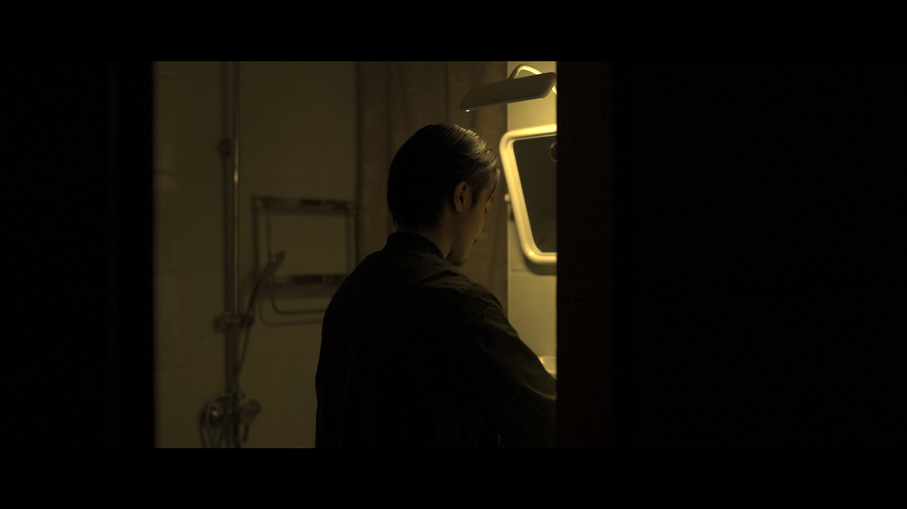
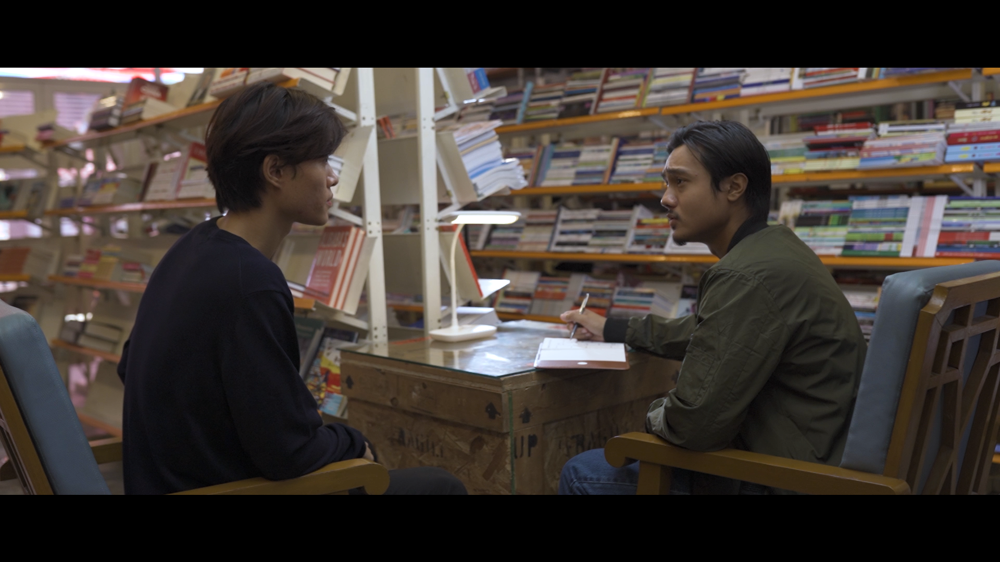
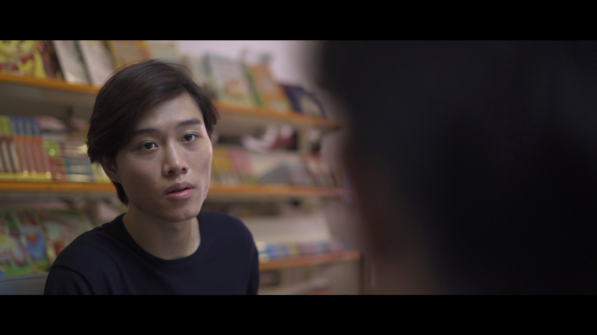
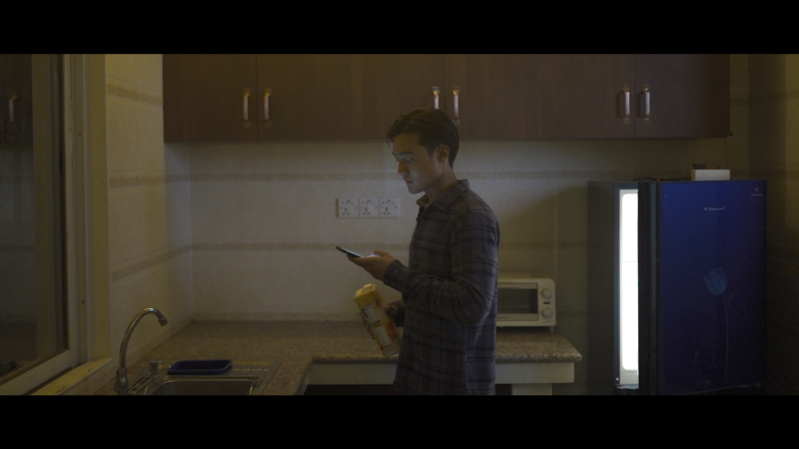
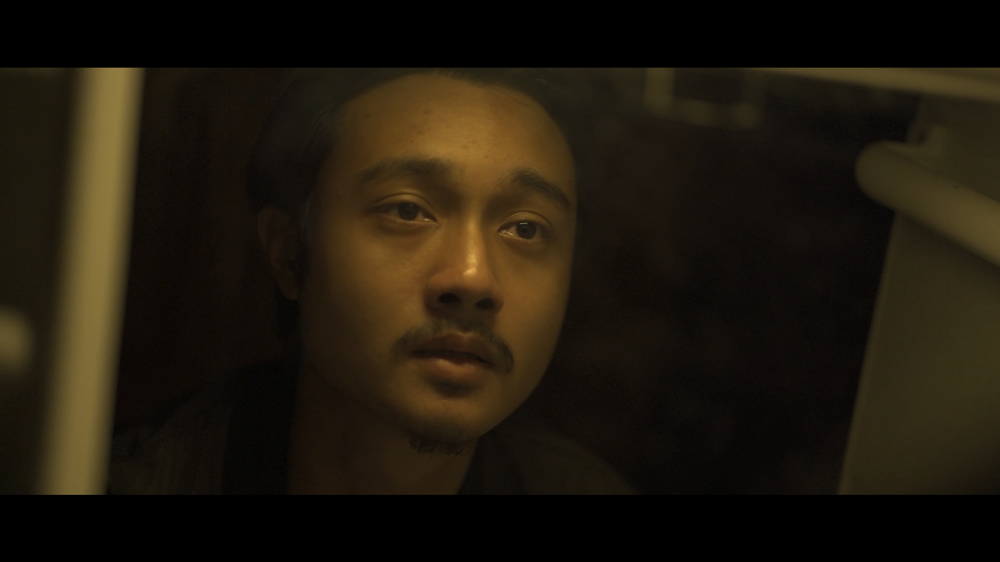
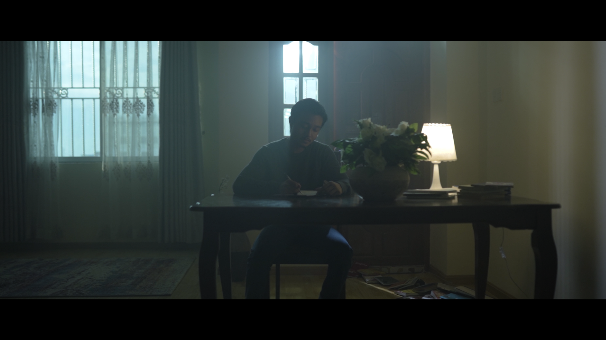

Been excited to share this for a while, I’m actually proud of my work in the final product. Probably one of the most challenging but fun shoots I’ve had all year, the amount of effort and and love that went into this was crazy.
Director: Flavian
1st Assistant Director: Max Misteno
Produced by: RIVA Films
Director of Photography: Max Misteno
Key Grip & Lighting: Joseph Hope
Gaffer: Thomas
Audio: Shine
Editor: Max Misteno
Cast: Flavian, Lewis, Mary, Tracy, Yang Shi





